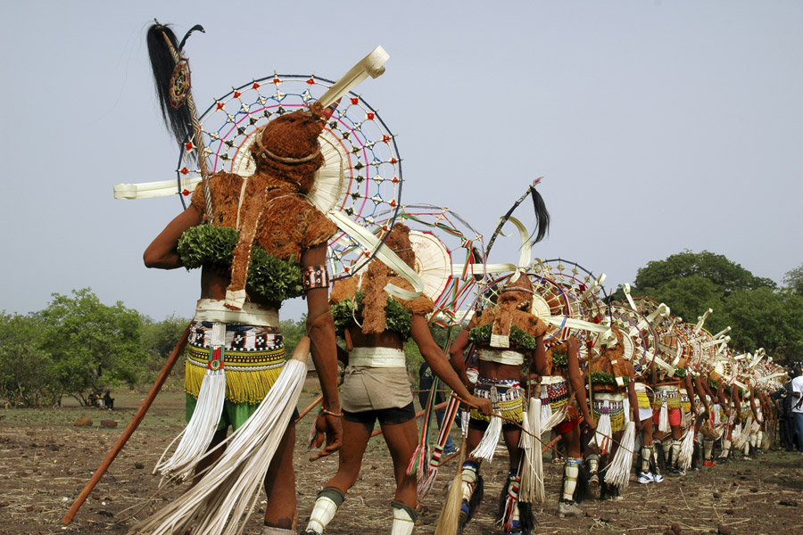

A 700 km de Dakar, sur la route nationale 7, au bord du fleuve gambie , Kedougou est située dans une région de collines, à proximité des pays Bédik et Bassari. Le Pulaaar est la langue vernaculaire la plus répandue. Les activités économiques traditionnelles ( agricultures et extraction de l'or) ont été enrichies par le développement du tourisme. Et de la chasse sportive. Kedougou a une chute d'eau de plus de 50 mètres, une forêt dense. La cascade est une merveille de la nature.

Parmis les plus beaux paysage de kedougou nous avons le paysage culturel Bassari est situé dans le sud-est du Sénégal, à proximité des frontières avec le Mali et la Guinée, dans une région de collines formée par les contreforts septentrionaux du massif Fouta Djalon. Le paysage comprend deux environnements géographiques distincts : la plaine alluviale et la pénéplaine au nord et les montagnes au sud. Le premier est couvert d’une mosaïque de parcelles cultivées, de prairies et de savane boisée, le second, relativement haut et abrupt, parsemé de grottes naturelles, a offert un environnement particulièrement propice à l’établissement de différents groupes culturels et à leur défense. Des vestiges archéologiques témoignent de l’occupation humaine ancienne de la région.